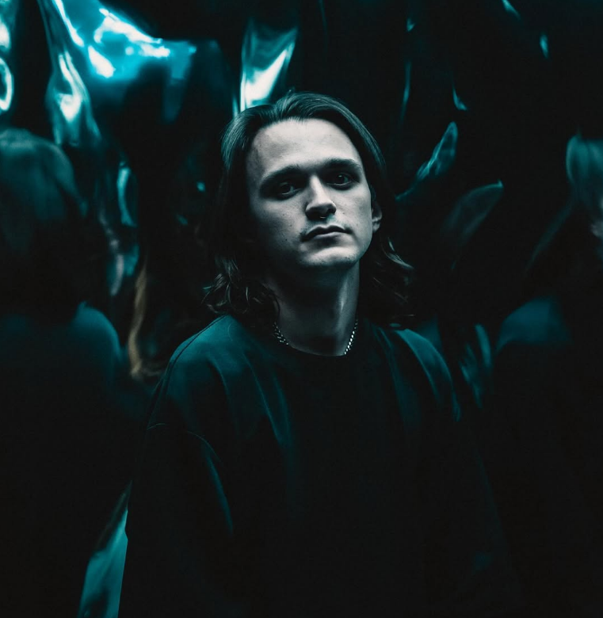

Jono Hawkey
Frontman since day one, and the band's principal lyricist.
Jono is Bloom's vocalist and a founding member. He has fronted the band since it formed in 2017, when a group of schoolfriends from Belrose decided they wanted to make loud music together.
His voice spans the band's full range, from the screamed intensity of Withered to the restrained, almost-spoken passages on Tongue Tied. He writes most of the band's lyrics, often building them while the songs themselves are still being written, and much of Bloom's catalogue returns to the same territory: grief, nostalgia and the disappointment of expectations.
He has appeared on every Bloom release to date, from the 2017 debut single Cure Me through to The Light We Chase.